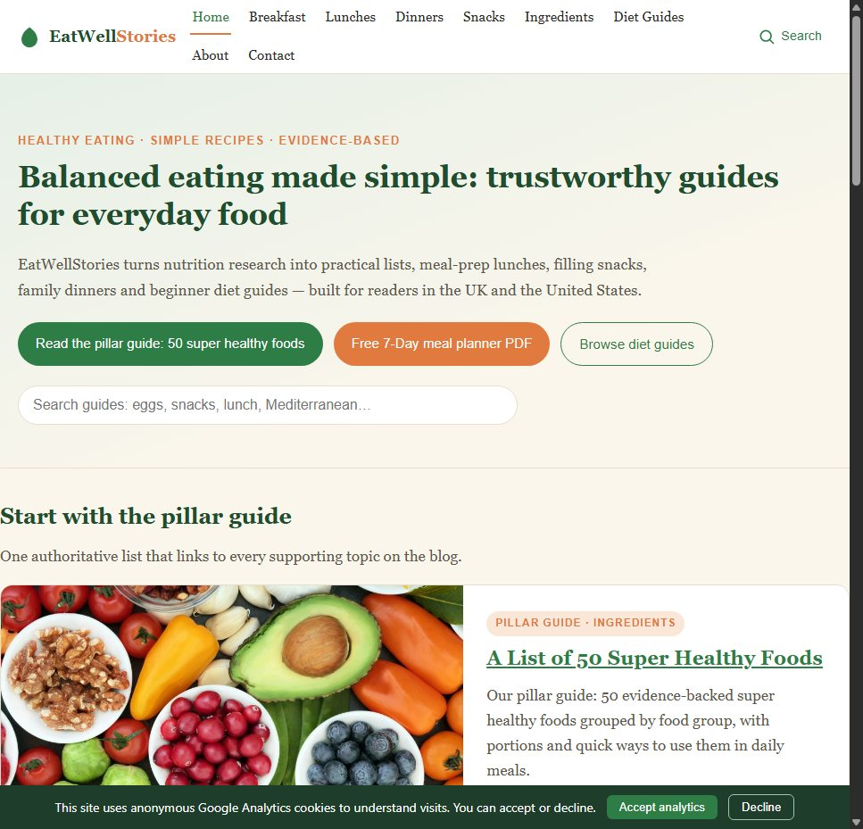
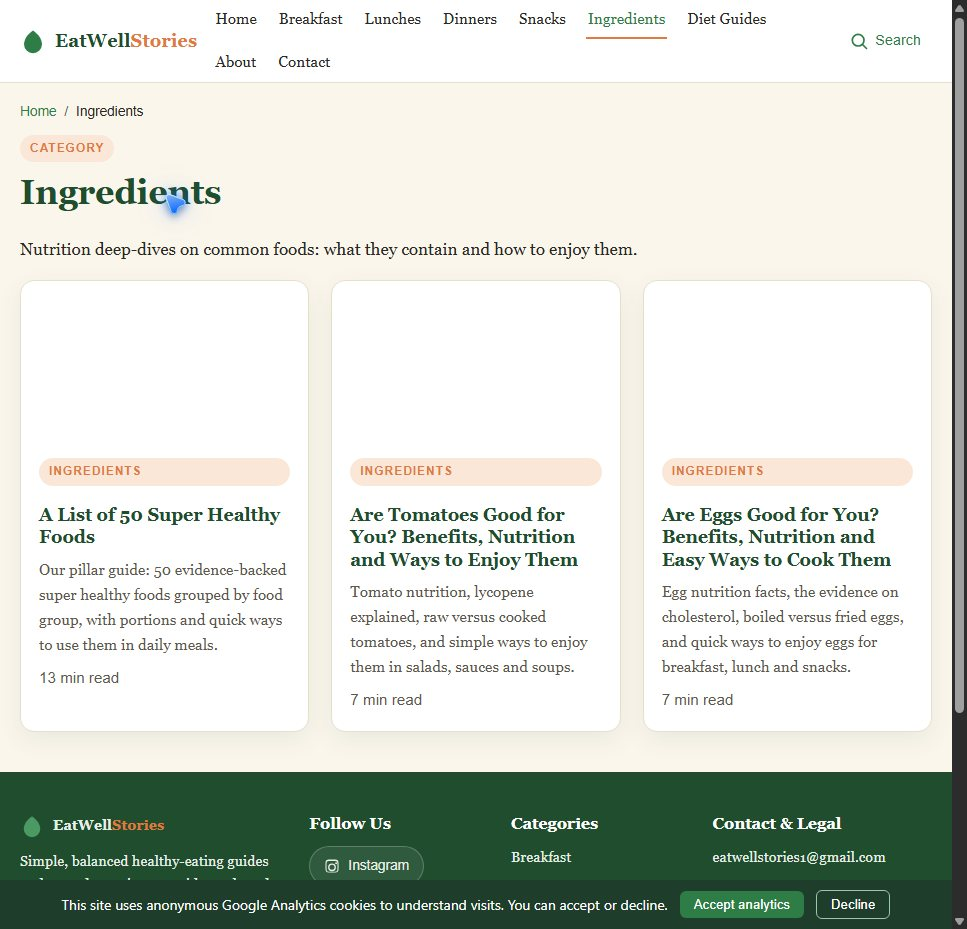
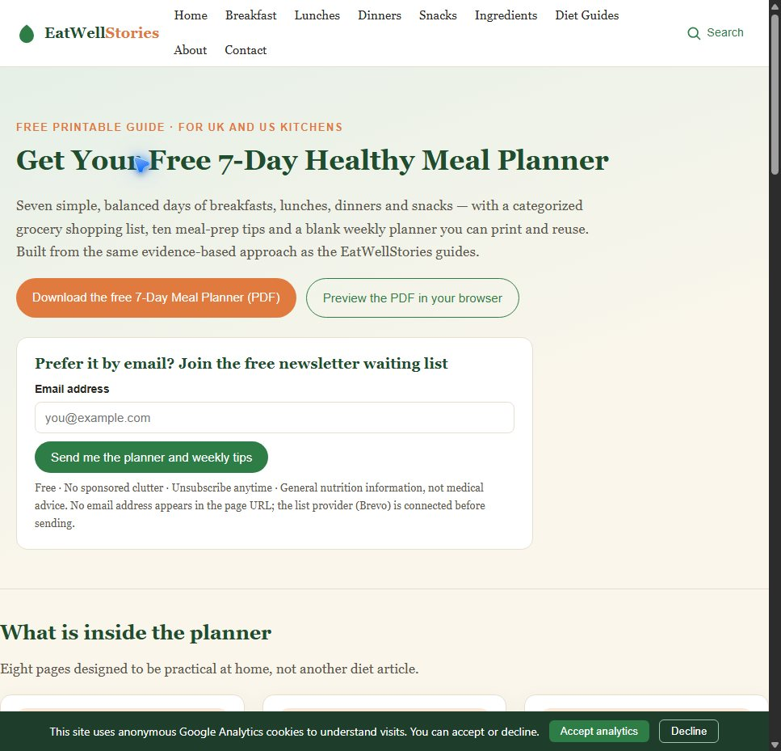
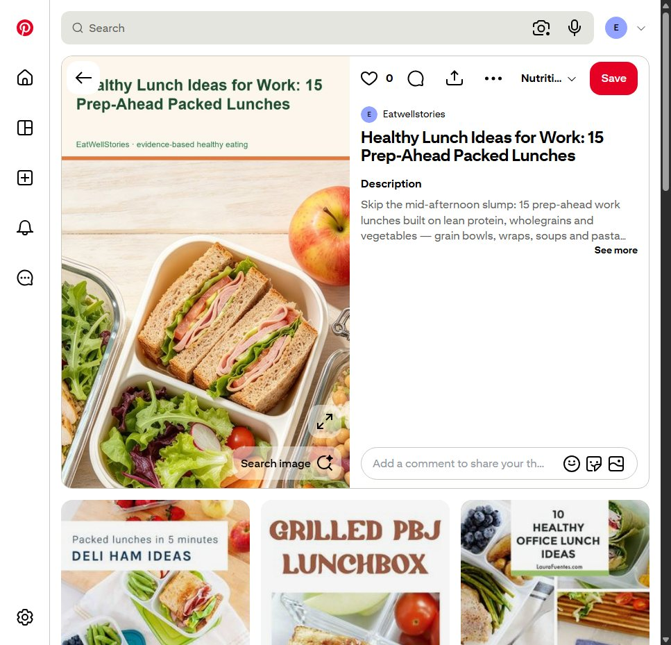
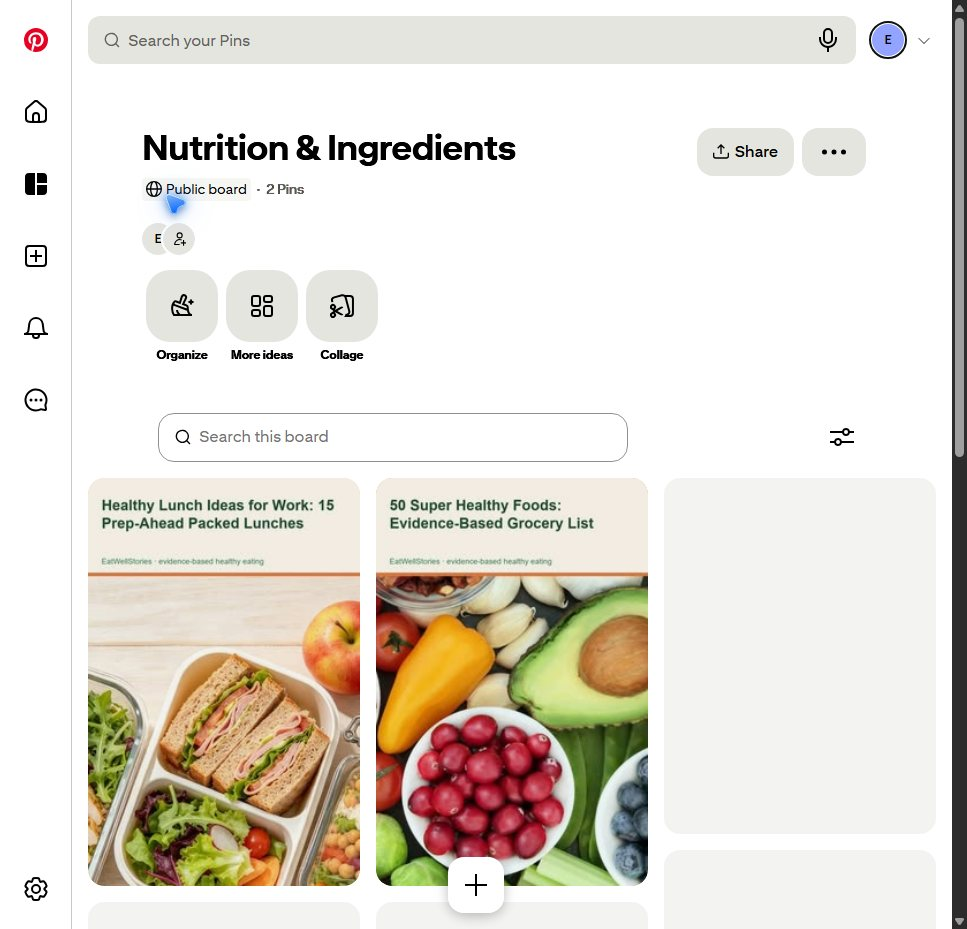
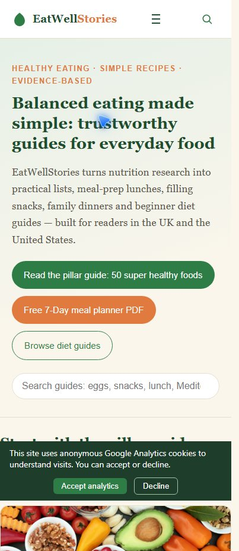

Case Study · SEO · Content Marketing · Digital Analytics
EatWellStories — SEO, Content Marketing & Digital Strategy
Creation, development and ongoing optimization of a healthy-nutrition and balanced-diet blog: an evidence-based content platform built for readers in the United Kingdom and the United States, combining technical SEO, structured content production, social distribution and a lead-generation funnel.
Author: Youssef El MontassirRole: SEO / Content / Web buildYear: 2026Live: eatwellstories1-lgtm.github.io
1. Overview & objectives
EatWellStories turns public-health and nutrition evidence (WHO, Harvard Healthy Eating Plate, NHS, USDA FoodData Central, Cleveland Clinic) into practical lists, meal-prep lunches, family dinners, snack ideas and beginner diet guides. The project covered the full chain from content strategy to shipped product:
Define a content niche (healthy eating, simple recipes, evidence-based advice) and a UK / US audience focus.
Build a fast, responsive static blog with clear information architecture and category hubs.
Produce SEO-optimized long-form articles around a pillar-guide / supporting-topic cluster model.
Set up measurement (GA4, Search Console, sitemap/robots) and a distribution engine (Pinterest-first, Instagram plan, email lead magnet).
Plan monetization through a lead magnet / newsletter funnel and future affiliate placements, without publishing fabricated performance numbers.
2. Strategy framework
Keyword research & search intentTopic mapping around informational queries (listicles, ingredient guides, meal ideas); each article targets one primary focus keyword with supporting long-tail questions, matching informational intent.
On-page SEOUnique title tags and meta descriptions, H1/H2/H3 hierarchy, canonical URLs, descriptive alt text, internal anchor text, Open Graph / Twitter cards and JSON-LD structured data (BlogPosting, FAQPage, BreadcrumbList).
Architecture & internal linkingPillar guide ("50 Super Healthy Foods") linking out to supporting articles; six category hubs (Breakfast, Lunches, Dinners, Snacks, Ingredients, Diet Guides) linking back to the pillar; breadcrumb schema on every article.
Content productionEditorial calendar with 30-day plan; evidence-based drafting, read-time estimates, consistent taxonomy and a reusable article template (share bar, sidebar planner CTA, related navigation).
Distribution — Pinterest & socialPinterest business account with keyword-named boards, vertical 2:3 graphics, keyword-rich titles/descriptions/hashtags and UTM-tagged destination links; Instagram caption bank and repurposing plan; share buttons (Pinterest, Facebook, X, native share, copy link).
Monetization & funnelFree 7-day meal planner PDF as lead magnet, newsletter capture on the homepage, every article sidebar and the dedicated landing page; affiliate links reserved for future newsletters; provider-ready form flow (no simulated subscriptions).
3. Tools & technologies actually used
Tool
How it was used
Google Analytics 4
GA4 tag (G-SH5CX1KMCM) deployed on all pages with consent-mode banner; anonymized page-view and engagement tracking.
Google Search Console
Site verification meta tag on all indexable pages; sitemap.xml and robots.txt submitted for indexing coverage monitoring.
Pinterest (business account)
Profile @eatwellstories; keyword-named boards; published pins with descriptions, hashtags and UTM destination URLs; share-to-Pinterest button on articles.
GitHub Pages
Static site hosted and published from a Git repository on the main branch.
HTML5 / CSS3
Semantic markup, responsive grid, mobile breakpoints, accessible focus states and print/cookie-consent UI.
JavaScript (vanilla)
Client-side search over a JSON index, cookie-consent persistence, share-bar actions, mobile navigation and dynamic year/footer behavior.
4. Deliverables — content inventory
Article
Category hub
Focus / format
Read time
A List of 50 Super Healthy Foods (pillar)
Ingredients
Evidence-based food list; cluster anchor
13 min
Are Tomatoes Good for You? Benefits, Nutrition and Ways to Enjoy Them
Ingredients
Ingredient deep-dive, raw vs cooked
7 min
Are Eggs Good for You? Benefits, Nutrition and Easy Ways to Cook Them
Ingredients
Ingredient deep-dive, evidence on cholesterol
7 min
12 of the Healthiest Foods to Eat for Breakfast
Breakfast
Listicle, protein + fibre combinations
5 min
Healthy Lunch Ideas for Work: 15 Prep-Ahead Packed Lunches
Lunches
Meal-prep listicle, Sunday batch system
6 min
Easy Dinner Ideas — Healthier Families
Dinners
Family traybakes, soups, stir-fries, beans
6 min
20 Healthy Snack Ideas That Are Filling and Nutritious
Snacks
Protein + fibre snacks, work-ready swaps
7 min
Mediterranean Diet for Beginners: Benefits, Foods to Eat and a Simple Starter Plan
sitemap.xml (22 indexable URLs), robots.txt, RSS feed (9 items) and a client-side search index.
Structured data on articles: BlogPosting, FAQPage and BreadcrumbList JSON-LD; canonical and social meta tags.
Lead magnet: free 7-day balanced meal planner PDF with shopping checklist; newsletter capture placements across the site.
Pinterest assets: 12 designed 2:3 pin graphics with titles, descriptions, hashtags and UTM URLs; 3 live pins published across 2 active boards; third board prepared for the free printable.
30-day editorial calendar (Excel) with platform, asset, caption, hashtags, clean URL, UTM tracking link and KPI columns; Instagram caption/hashtag bank.
5. Measurement framework (no fabricated metrics)
GA4Sessions, users, top pages, engagement, referral channels
GSCImpressions, clicks, average position, indexed pages
The editorial calendar defines KPI target columns (impressions, saves / outbound clicks, likes / comments, new followers, planner downloads); actual cells are left blank until data is recorded. The project therefore presents delivered assets and strategy, not invented traffic, ranking or conversion numbers. Growth decisions are taken from GA4, Search Console and Pinterest analytics after the launch baseline.
Honesty note: the blog is in its launch phase. Public screenshots show the live site, live structured pages and live Pinterest pins. No traffic, impression, follower or revenue figure in this case study has been estimated or invented.
6. Key screens & evidence

Homepage — hero, value proposition, CTAs and search
On-page structure — H2/H3 hierarchy and evidence-backed sections

Category hub — internal linking between articles

Lead magnet funnel — free planner download + email capture

Published Pinterest pin — keyword description and outbound link

Pinterest board — Nutrition & Ingredients

Responsive mobile experience
7. Results shipped & next roadmap
Shipped: live responsive blog, 8 optimized articles, 6 hubs, technical SEO baseline, GA4/GSC measurement, Pinterest launch with published pins, lead magnet funnel and editorial system.
Next: connect the email provider to the newsletter form, expand the publishing cadence from the 30-day calendar, monitor GSC queries and expand long-tail content, test Rich Pin validation, and iterate conversion on the planner funnel from real GA4 / Pinterest data.